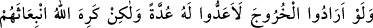
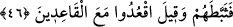

45. Ancak Allah’a ve âhiret gününe inanmayan, kalpleri kuşkuya düşmüş ve
şüpheleri içinde bocalayıp duranlar senden izin isterler.
Geride kalmak için “Ancak Allah’a ve âhiret gününe inanmayan, kalpleri kuşkuya
düşmüş...”
Bu cümlede, geçmiş zaman kipinin kullanılması, onlar için şüphenin tahakkuk ettiğini
göstermek içindir. Bu mânâdan anlaşılıyor ki; Şüphe içinde olan kişi mümin değildir.
Tereddüd, şaşırıp bocalayan kişinin âdeti, sebat ise basiretli kişinin âdetidir.
“ve şüpheleri içinde bocalayıp duranlar” kalplerinde yerleşmiş olan kuşkuları
içerisinde şaşırıp kalmış bir halde “senden izin isterler.”
et-Tibyân’da şu bilgi vardır: O vakitte izin istemek nifak (iki yüzlülük) alâmetidir.
Tebük Savaşı’ndan geri kalmak için izin isteyenlerin otuz dokuz kişi oldukları
söylenmiştir.
46. Eğer (cihâda) çıkmak isteselerdi, onun için bir hazırlık yaparlardı. Fakat
Allah onların davranışlarından hoşlanmadığı için onları durdurdu: “Oturanlarla
beraber oturun.” denildi.
Bu âyet, bazılarının “Biz aslında çıkmak istiyorduk, fakat ona hazırlanmadık. Yolculuk
vakti yaklaştı, artık hazırlık yapmamız mümkün değil” diyerek mazeret beyan ettiklerini
gösterir. Allah onları bu konuda yalanlamış ve şöyle buyurmuştur:
“Eğer” cihada “çıkmak isteselerdi,” şayet seninle beraber Tebük Gazvesindeki
düşmanla savaşmak üzere yola çıkmak isteselerdi, “onun” yâni yolculuk “için”
zamanında “bir hazırlık yaparlardı.” azık, sefere dayanıklı deve, silah vs. gibi sefer
için gerekli şeyleri hazırlarlardı.
“Fakat Allah onların davranışlarından hoşlanmadığı için onları durdurdu.” Fakat
onlar çıkmak istemediler. Onların müminlerle beraber çıkmalarında bir sonraki âyette
belirtilecek olan zararlar bulunduğu için Allah kendilerinin çıkmaya kalkışmalarını
istemedi. Onları korkaklık ve tembellikle alıkoydu, onlar da ağır davrandılar ve sefer
için hazırlık yapmadılar.
“Oturanlarla” işleri oturmak ve evden ayrılmamak olan kötürümler, hastalar, körler,
kadınlar ve çocuklarla “beraber oturun denildi.” Bu ifade ile onlar yerilmektedir. Bu
ifâde ilk bakışta/zâhirde daha önce geçen “Gerek hafif, gerek ağır olarak topluca
savaşa çıkın” âyetine ters düşmektedir. Bu yüzden âlimler onu temsile hamletmişlerdir.
Allah Teâlâ’nın onların kalplerine cihad için sefere çıkma isteksizliği koyması, onlara
oturmalarını emreden bir âmirin emrine teşbih edilmiştir, demişlerdir.
Ardından Allah Teâlâ, onların gitmeye kalkmalarını isememesinin sırrını beyan etmek